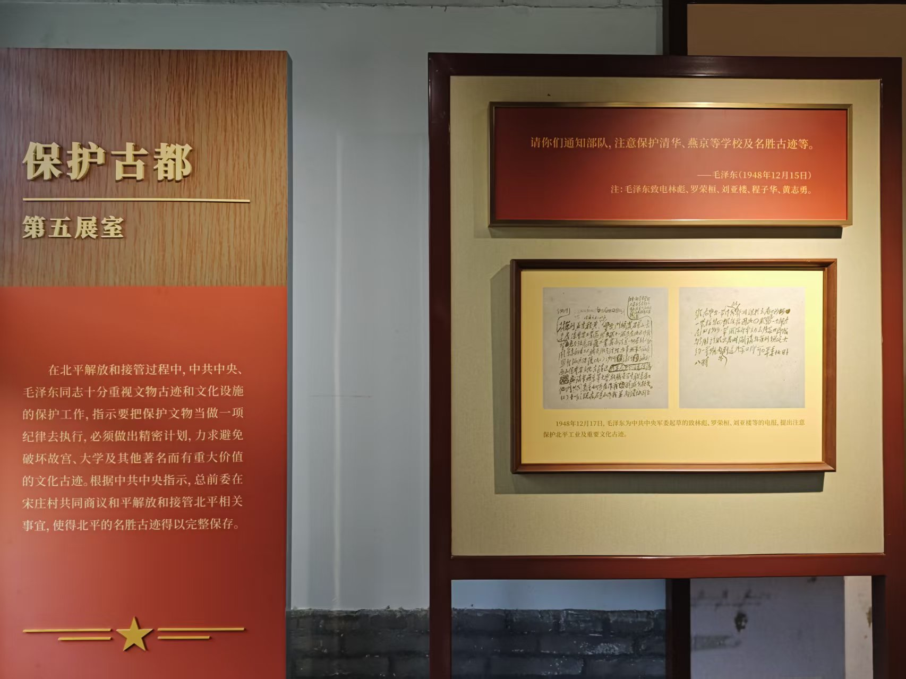
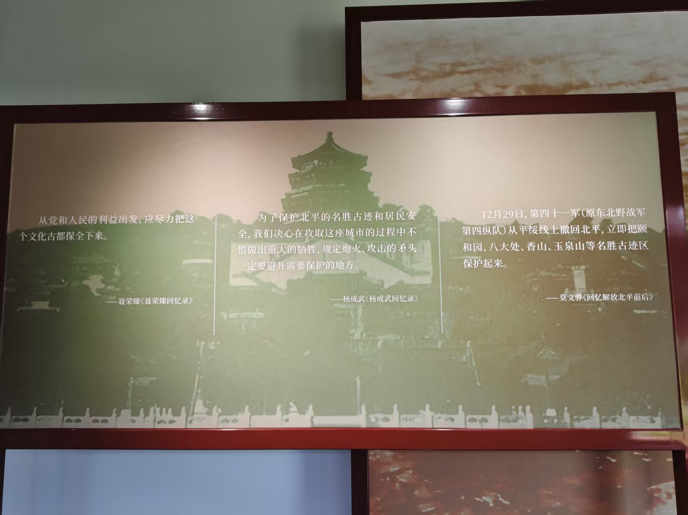
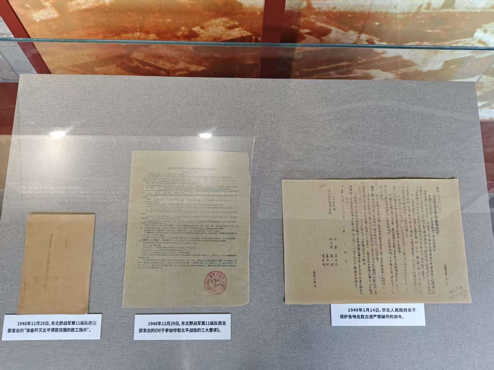
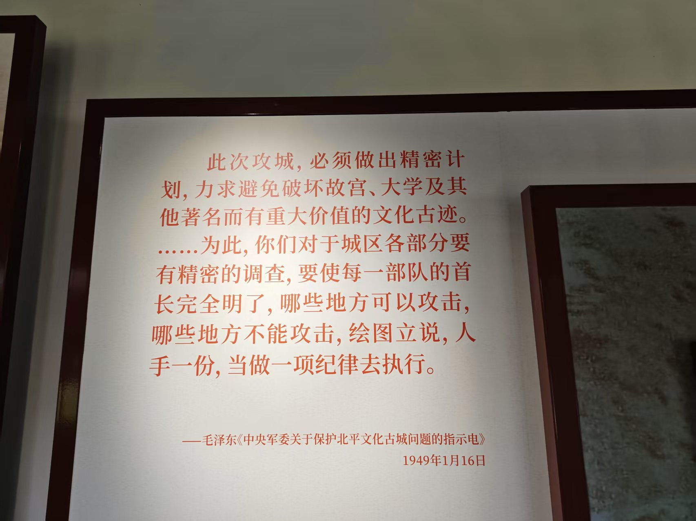
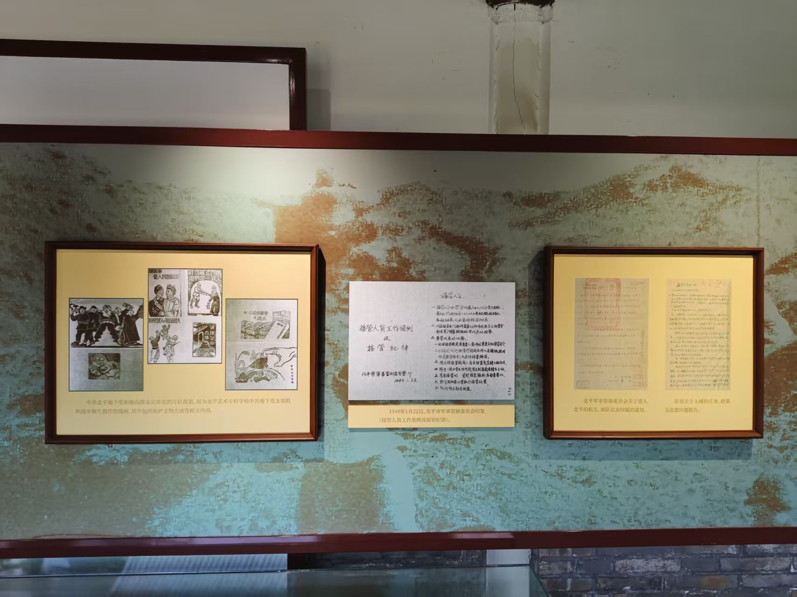
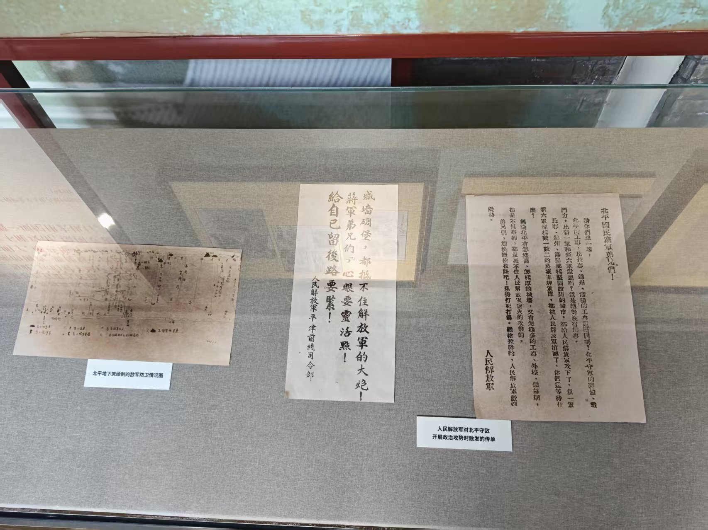
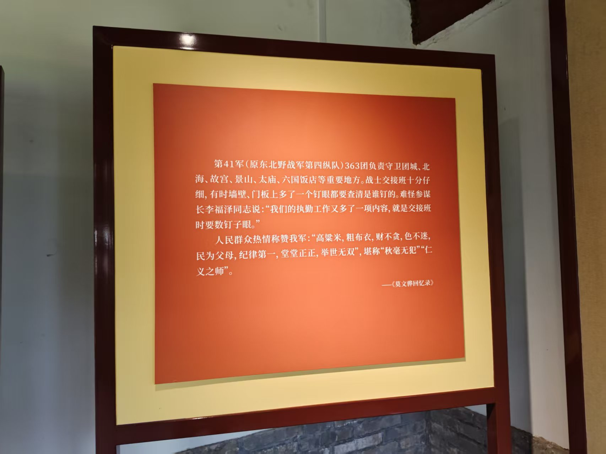
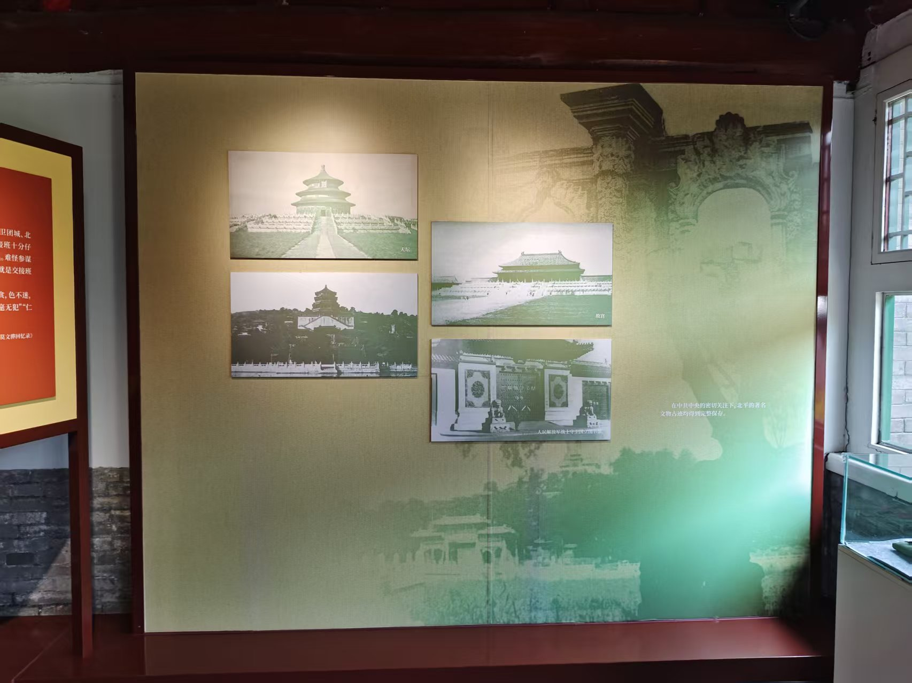
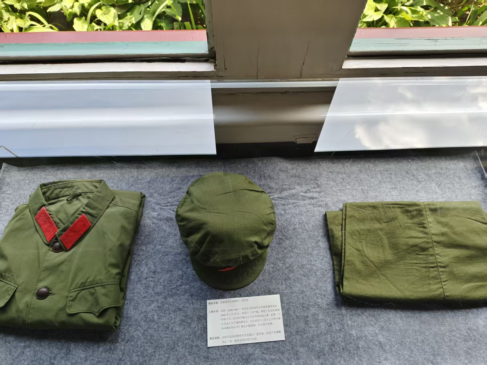

展区 5：保护古都
欢迎来到第五展区，保护古都。

展板引用1948年12月15日毛泽东致林彪、罗荣桓等人的电报，明确要求“注意保护清华、燕京等学校及名胜古迹”，下方陈列12月17日毛泽东为中央军委起草的致林彪、罗荣桓、刘亚楼等的电报手稿，强调保护北平工业及重要文化古迹，体现最高层对文化遗产的高度重视。

展板以聂荣臻、杨成武、莫文骅三位将领的回忆录摘录为核心，分别阐述“从党和人民利益出发保全文化古都”“攻城时避开需保护区域”“第四十一军撤回北平后立即保护颐和园、香山等名胜”，背景为北平古城墙与城楼影像，强化历史现场感。

玻璃展柜内陈列三份关键文件：1948年12月28日东北野战军第11纵队政治部《准备歼灭北平傅匪突围的政工指示》、12月29日《对于参加夺取北平战役的三大要求》，以及1949年1月14日华北人民政府《关于保护各地名胜古迹严禁破坏的训令》，这些文件是部队执行保护任务的直接依据。

展板突出显示1949年1月16日毛泽东《中央军委关于保护北平文化古城问题的指示电》核心内容：“必须做出精密计划，力求避免破坏故宫、大学及其他著名而有重大价值的文化古迹……绘图立说，人手一份，当做一项纪律去执行”，凸显保护工作的系统性与纪律性。

左侧展板展示中共北平地下党向群众宣传党的方针政策的漫画，中间为1949年1月22日北平市军事管制委员会印发的《接管人员工作条例及接管纪律》，右侧陈列《关于进入北平的机关、部队住房问题的通知》等文件，反映接管阶段的组织规范与群众动员。

展柜内陈列人民解放军对北平守敌开展政治攻势时散发的传单，如“盛墙碉堡，都抵不住解放军的大炮！给自已留后路要紧！”及《北平国民党军弟兄们！》等，左侧为北平地下党绘制的敌军防卫情况图，体现军事压力与政治瓦解并行的策略。

展板详述第41军363团负责守卫团城、北海、故宫、景山等重要地点，战士交接班时连钉眼都要查清，参谋长李福泽称“执勤工作又多了数钉子眼”，并引用莫文骅回忆录中群众称赞“高粱米，粗布衣，财不贪，色不迷，民为父母，纪律第一”，彰显“仁义之师”形象。

展板陈列天坛祈年殿、故宫太和殿、景山万春亭、北海白塔等四张历史照片，右下角文字说明“在中共中央的密切关注下，北平的著名文物古迹均得到完整保存”，直观呈现保护成果。

展柜内陈列一套绿色军装、军帽与裤子，标签注明为马辉（1920-1997）生前最后一套军装，他于1949年1月17日进入北平，曾任200师师长，参与北平和平解放谈判与接管，这套军装是其革命生涯的实物见证。